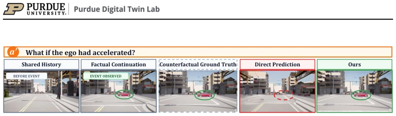
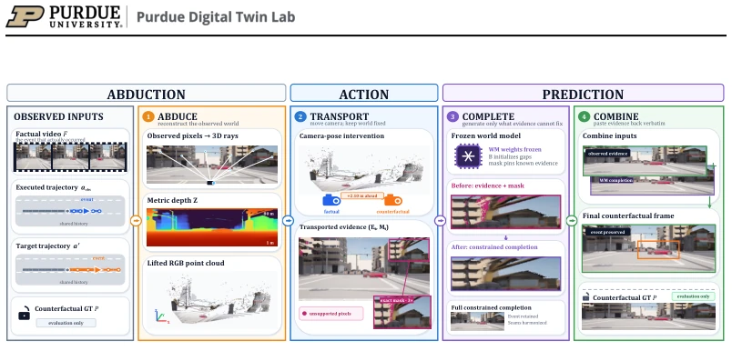
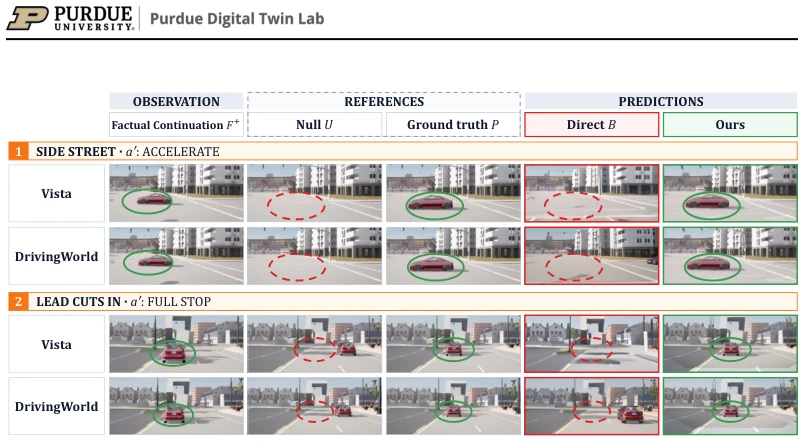
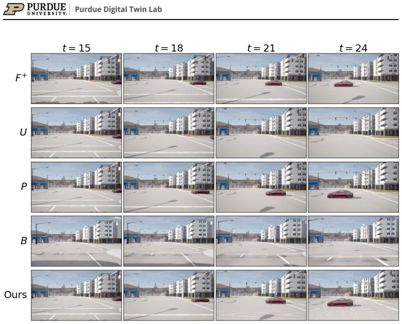

How Can Driving World Models Do Counterfactual Prediction?
Jiaru Zhang, Can Cui, Yi Xu, Xin Ye, Ruqi Zhang, Ziran Wang abspdf
论文点评Review
这篇论文给自动驾驶世界模型的“反事实”能力泼了盆冷水。业界吹嘘模型能模拟“如果当时刹车会怎样”，但作者犀利指出这其实是幻觉。直接预测仅基于共享历史和新动作，忽略了“事实延续”（实际发生了什么），导致生成的未来虽然流畅但丢了关键事件（比如侧街突然冲出的车）。虽然提出了个不用训练的简单方案，本质是几何搬运 + 补全，但依赖深度估计精度，且推理耗时翻倍。更讽刺的是，真车上无法获取反事实真值，只能靠仿真验证。不过，把 Pearl 的因果理论硬套进生成模型，确实指出了当前“反事实”评估的盲区，让那些只会跑分数的模型原形毕露。
—
研究动机Motivation
自动驾驶安全审计需要知道“如果当时没撞车会怎样”，即反事实预测。现有工作如 Vista [Gao et al., 2024] 和 Drive-WM [Wang et al., 2024b] 声称具备此能力，但作者发现它们混淆了干预预测与反事实预测。根据 Pearl 的因果阶梯 [Pearl, 2009]，真正的反事实需要利用观测到的事实结果进行溯因（abduction），而现有模型仅基于共享历史和新动作生成，忽略了事实延续中的证据，导致无法保留特定场景的具体事件。此外，真实驾驶无法提供反事实真值，导致评估缺失。这不仅是评估问题，更是方法论缺陷，使得模型在事故责任认定等关键场景下不可靠。论文指出这种失败源于信息利用不充分，而非模型能力不足。
—

Figure 1: Counterfactual prediction for one observed episode. The shared history shows the ego approaching an intersection. In the factual continuation, a red car emerges from a side street as the ego follows its recorded trajectory. We ask what the camera would have recorded had the ego instead accelerated along the target trajectory a′ shown in the header. The counterfactual ground truth shows that the car would still have emerged. The direct prediction, which uses the shared history and a′, fails to preserve this event, whereas Ours additionally uses the factual continuation and recovers the car near its counterfactual location.
方法Method
方法是一个四阶段无训练流水线。首先 Abduce 利用冻结的深度模型从事实视频中重建 3D 点云，恢复观测到的世界状态。接着 Transport 将相机位姿从实际轨迹变换到反事实轨迹，通过深度投影将观测证据“搬运”到新视角，保留已知几何，生成支持掩码。然后 Complete 阶段让冻结的世界模型仅生成证据未覆盖的盲区，类似掩码修复，扩散模型在去噪中途注入约束，确保生成内容不破坏已知区域。最后 Combine 将搬运的证据与生成内容融合，平滑边界。核心在于将世界模型从“全量生成”降级为“补全未知”，利用几何先验保证事实一致性，避免模型自由发挥导致事件丢失。这种方法无需更新权重，仅靠推理时的几何操作和掩码控制，实现了因果理论中的溯因与预测分离。
—

Figure 2: Overview of our method. The factual driving log comprises RGB video F and its executed ego trajectory aobs, while the target trajectory a′ specifies the counterfactual action. The four stages instantiate the causal recipe of abduction, action, and prediction. (1) Abduce recovers the observed part of the realized world from the factual log. (2) Transport applies the target action by moving the camera from aobs to a′ while holding the world fixed, yielding factual evidence Et and a support mask Mt in the counterfactual view for each frame t of the prediction window. (3–4) Complete and Combine implement prediction: the frozen world model generates the unsupported regions, while the Combine stage restores the transported evidence in the output. The counterfactual ground truth P, the
实验Experiments
在 CARLA 构建基准，186 个案例，包含事实日志和反事实真值（重放不同动作）。基线为 Vista 和 DrivingWorld 的直接预测。指标包括语义恢复率（Rec）和感知距离（LPIPS），并引入无事件参考 U 进行归一化。结果显示直接预测 Rec 仅 0.3-0.4，常丢失事件车辆；本文方法提升至 0.6-0.7，LPIPS 显著降低。消融实验表明 Transport 阶段贡献最大，证明事实证据搬运是关键。场景涵盖侧街车辆、前车切入等。虽然推理时间增加，但无需微调，验证了因果分析的有效性，为未来方法提供了基准。
—

Figure 3: Qualitative comparison at a representative frame late in the prediction window. The upper block shows a vehicle emerging from a side street under ego acceleration and the lower block a lead vehicle cutting in while the ego brakes to a full stop. Each block has one row for Vista and one for DrivingWorld. Columns show the factual continuation F +, the references used only for evaluation, U (event-free null) and P (counterfactual ground truth), and the predictions B (direct prediction) and Ours. Ellipses mark the event location, solid where the event vehicle is present and dashed where it is absent. Within each row, B and Ours use the same frozen model, shared history H, and target trajectory a′. B omits or misplaces the event vehicle, whereas Ours recovers it near the location show

Figure 4: A temporal comparison for a side street case in Town03 with Vista. The columns show frames 15, 18, 21, and 24. The rows show the factual continuation F +, null reference U, counter- factual ground truth P, direct prediction B, and Ours. The vehicle emerges over time in F +, P, and Ours.